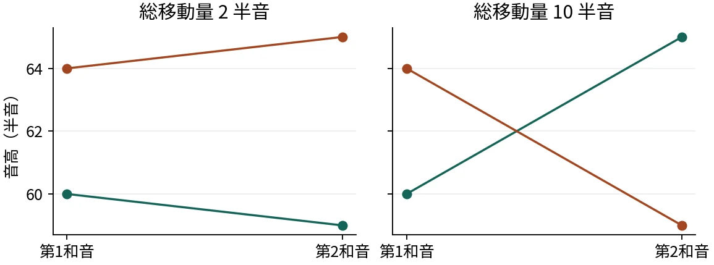

第48章 ショパンの左手を幾何学の道として読む
和音を点、声部の動きを線として描き、和音の「近さ」を幾何学で読む。
この章で学ぶこと
- 二声の組を座標平面の点として表す
- 声を交差させない割り当てが最短になる理由を知る
- ショパン Op.28-4 の左手を、半音の動きとして聴く
ホ短調の前奏曲の冒頭で、右手の旋律を口ずさんだあと、今度は左手の和音から一本だけ音を拾って歌ってみよう。鍵盤を打ち直すたびに和音名を言うのは難しい。それでも、いま歌った声が次に半音だけ沈んだことなら追えるかもしれない。和音に名前を付ける分析と、指がたどる道の分析は、同じ数秒に違う質問を投げかける。本章では「指を合わせて何半音動かしたか」という問いを座標にする。
鍵盤の二つの音を紙に置く
ピアノの中央のドを60、隣のド♯を61と数える。一つめの声の音高を 、二つめを とし、これらを座標平面の一点 に置く。一方の声を半音ずらす操作は、方眼紙で隣の交点へ進むことになる。声に識別可能な音色を割り当てると、 と は別の配役である。同じ鍵盤を同じ強さで同時に鳴らすという条件では、順番を交換しても鍵の組は同じだ。この条件で等しいものを一点にまとめる操作を商と呼ぶ。紙を対角線 に沿って折れば、二点の交換を目で確かめられる。折り目は二声がユニゾンになる場所である。
さらに、オクターヴだけ違うドを同じ音高類と見なせば、一つの座標は周長12の円になる。二つなら円の直積、すなわちトーラス。そこに声の交換を加えると、二音の無順序の組がつくる連続空間はメビウスの帯になる。なぜねじれるのか。円上の異なる二点は円周を二つの弧に切る。片方の弧の長さを 、中点を とすれば、もう片方を選んだ表記は である。 を半周進んだ位置を貼るとき、弧の長さの大小は逆を向く。 と が表すユニゾンの縁もこの貼り方で一続きになる。実際のピアノでは押せる鍵は有限個で、連続的な帯の上に格子点を取った模型になる。
どの割り当てが最短か
二音を同じ音域に保ち、総移動量を各声の半音距離の和で測る。 から に向かうとき、声を交差させない割り当てが最短解の一つになる。
証明を読む（読まなくても先へ進めます）
と置く。 では 、 では 、 では である。したがって 。両辺の項を移せば上式を得る。等号も起こる。四音が と並ぶと、交差しても合計は同じである。声が三つ以上でも、交差を一組ずつ入れ替えると、移動量を増やさず音高順の割り当てに至る。音域を固定し、声の識別を捨ててよい場合の結論である。
例・計算
小さな譜例。 ドとミ からシとファ へ。下声を下に、上声を上に送れば合計2半音。声を入れ替えて送ると 半音。終点で押す鍵は同じでも、グリッサンドで二点の間をゆっくり結べば二つの経路を聴き分けられる。固定音高を同時に二度打鍵するだけでは、指の割り当ては音に刻まれない。誰の移動を聞いたのか判断するには、中間の音、アーティキュレーション、左右の定位など、帰属を支える手掛かりが要る。

作品に戻る
ショパン《前奏曲》作品28の4、エリック・ルーによる演奏を開く。最初は左手の反復する打鍵に指を合わせる。二度目は同じ音を打ち直すあいだ指を止め、和音の構成音が入れ替わったときだけ動かす。三度目は右手の長い音の下で重なりがどう変わったかを言葉にする。「次はこの調だ」という言い方を保留しても、共通音の持続と半音移動で聞いた差を記述できる。この聴き方は譜例の二音進行を作品から引用したという主張を含まない。作品には拍、音域の厚み、旋律の保続、演奏者が変化させる時間がある。
問い
半音の移動だけで、Cメジャー、Eマイナー、Eメジャーの三和音を順に結べるか。
解答を見る（先に自分で考えてから）
低音から 、、。第1の変化ではCがBへ、第2ではGがG♯へ動き、各回に二声が保たれる。三つの根音を歌う課題と、二回とも動かなかったEを歌う課題はまるで違う。これを和音の機能や聴覚による声部の分離と重ねてほしい。
ここだけ押さえる
- 声を区別しなければ、二音の空間はメビウスの帯になる。
- 音域が固定なら、交差しない割り当てが総移動量の最小解の一つ。
- 和音名を付ける分析と、指の道をたどる分析は、別の問いに答える。
この章の資料
- D. Tymoczko の論文では、和音を点、特定の声部進行を線分に対応させる。The Geometry of Musical Chords
- ショパン研究所の作品目録で自筆譜の所在を読み、同研究所の演奏映像で冒頭の左手を追う。作品目録 ／ Eric Lu 演奏